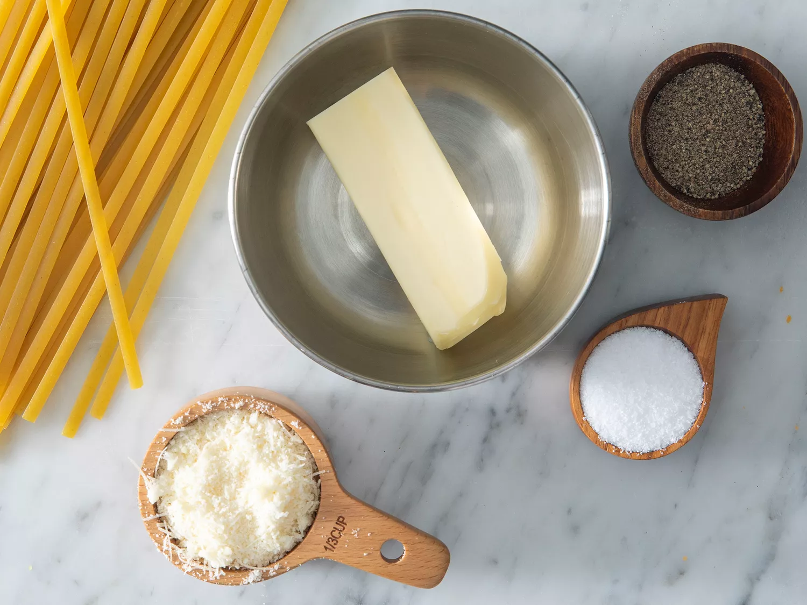

Buttered Noodles

width 500px height 500px
Buttered noodles are simple to make with your favorite pasta, butter, Parmesan
cheese, salt, and pepper for a quick and easy, kid-friendly dish. Fresh herbs
and a little lemon juice could be added to amp up the flavor. Perfect to serve
either as-is or alongside steak, chicken, or meatballs.
It's such a delicious recipe, yet I get many questions on how to make it.
INGREDIENTS
- 1 (16 ounce) package fettuccine noodles
- 6 tablespoons butter, cut into pieces
- ⅓ cup grated Parmesan cheese
- salt and ground black pepper to taste
STEPS
STEP 1
Gather all ingredients
- 
STEP 2
Fill a large pot with lightly salted water and bring to a rolling boil.
STEP 3
Stir in fettuccine, bring back to a boil, and cook pasta over medium heat until tender yet firm to the bite, 8 to 10 minutes.
STEP 4
Drain and return pasta to pot. Mix butter, Parmesan cheese, salt, and pepper into pasta until evenly combined.
STEP 5
Serve hot and enjoy!